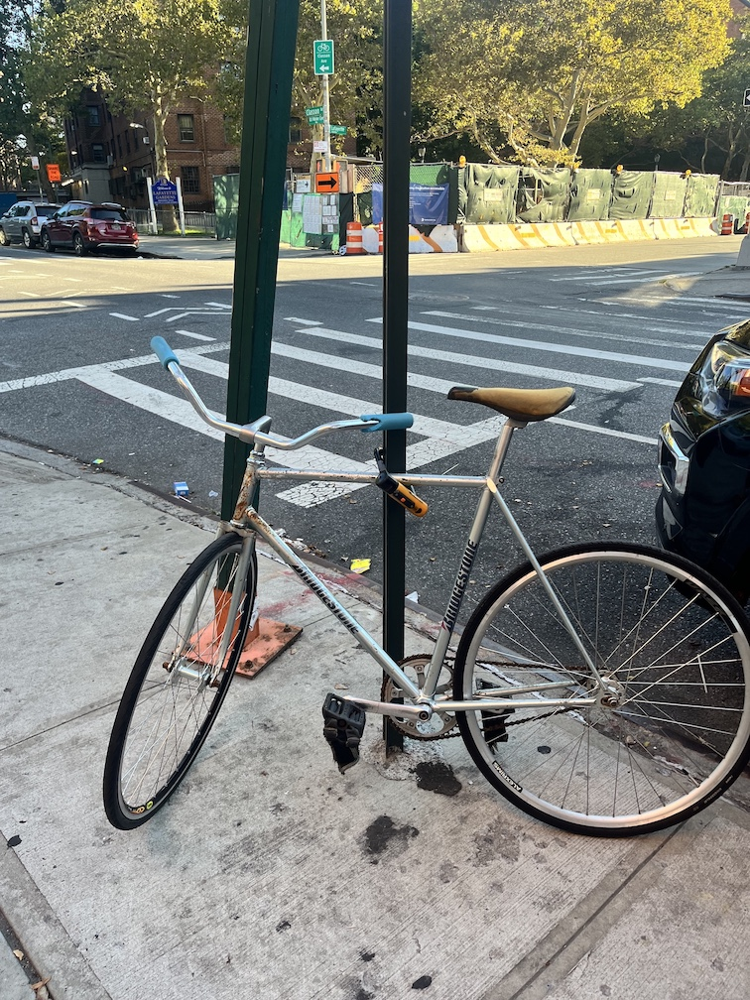
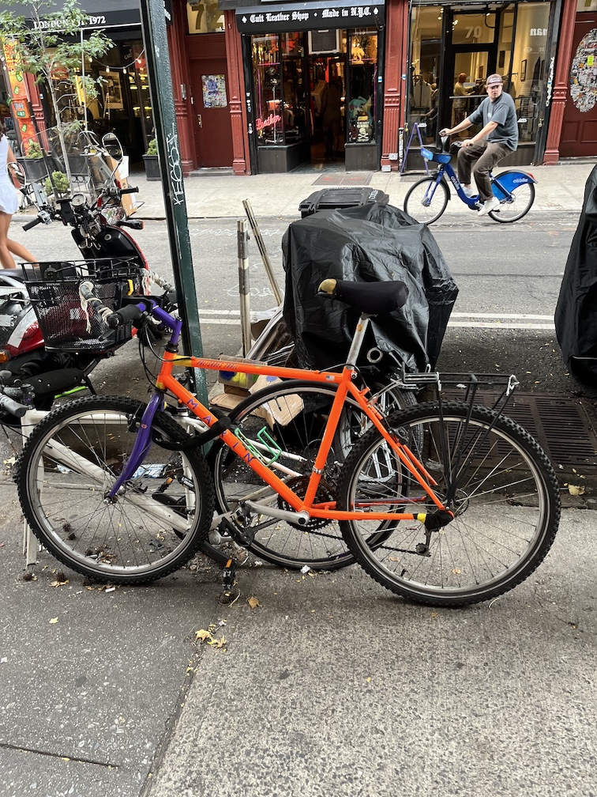
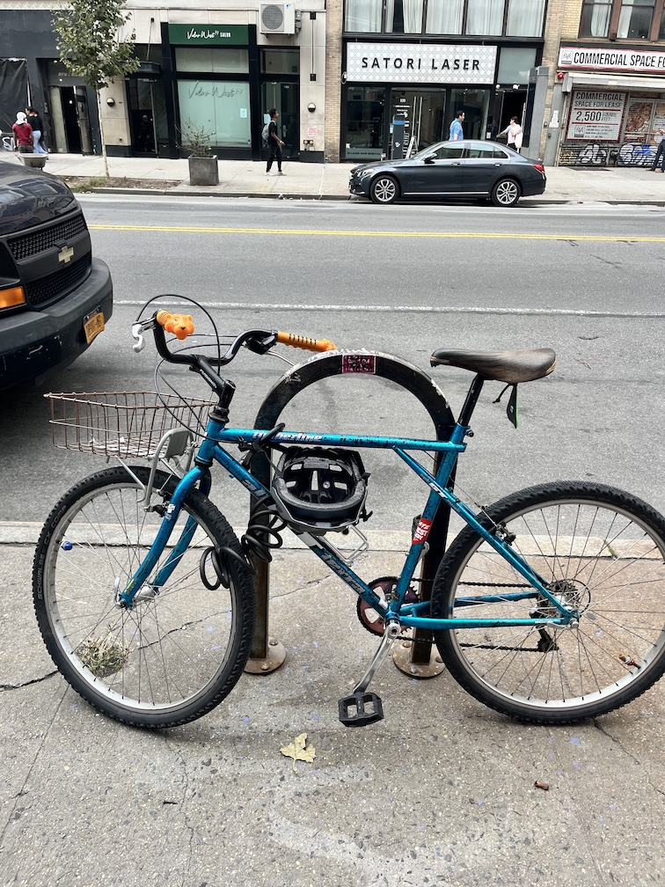
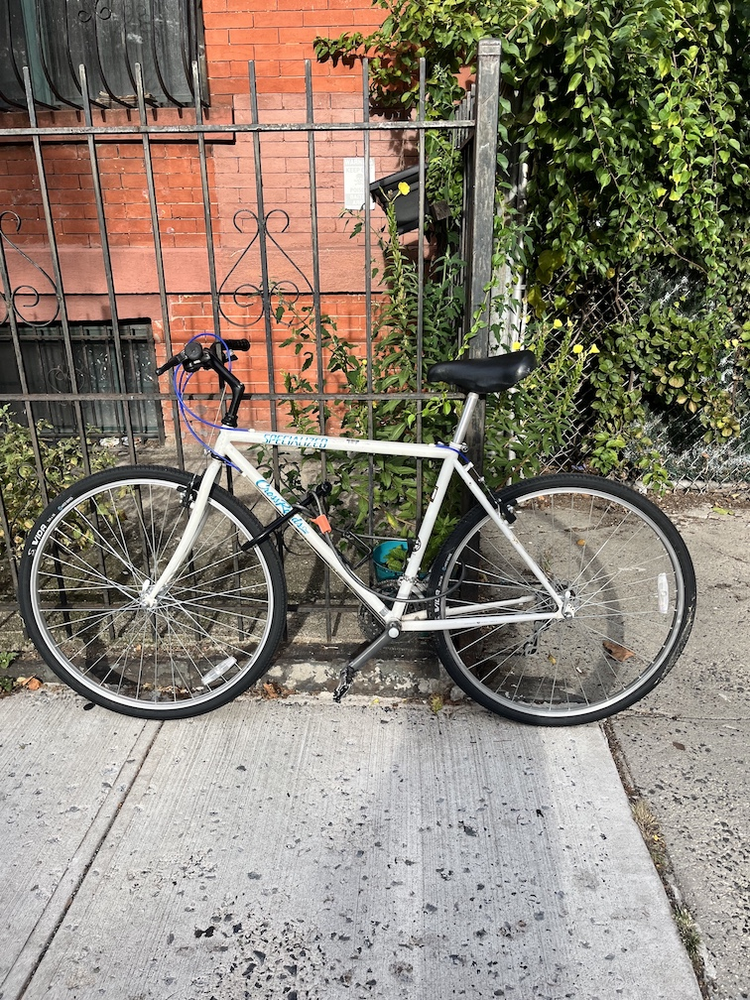
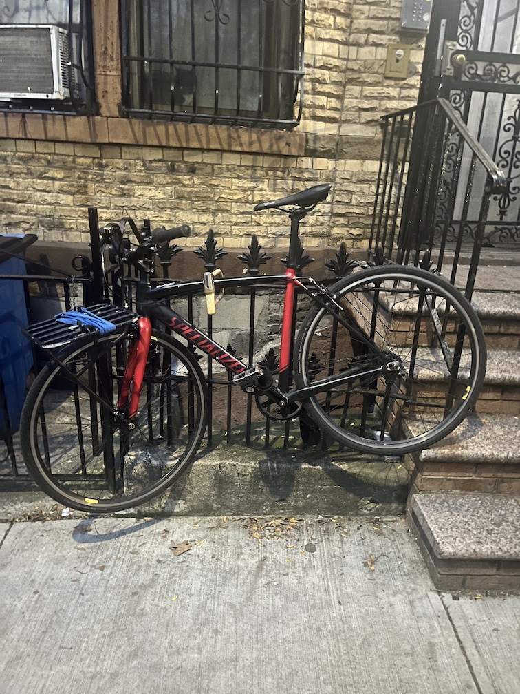
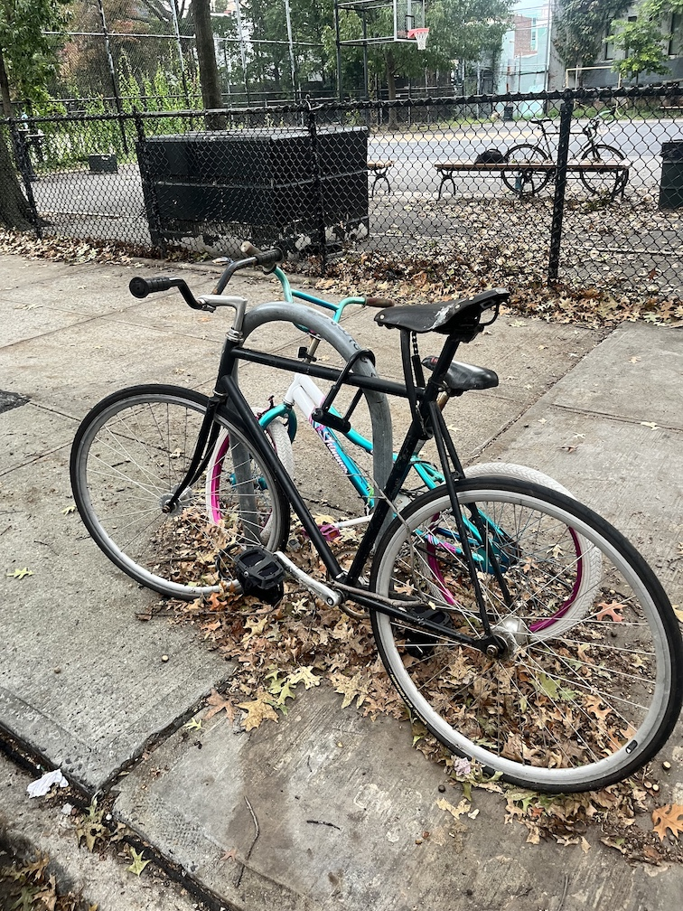
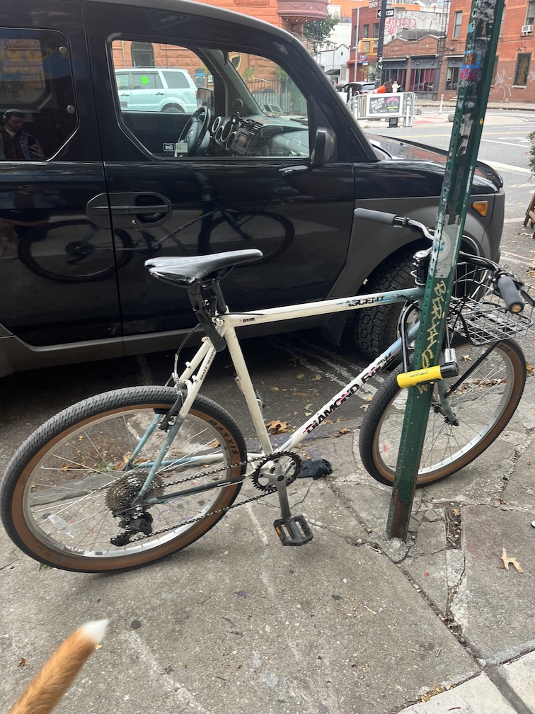
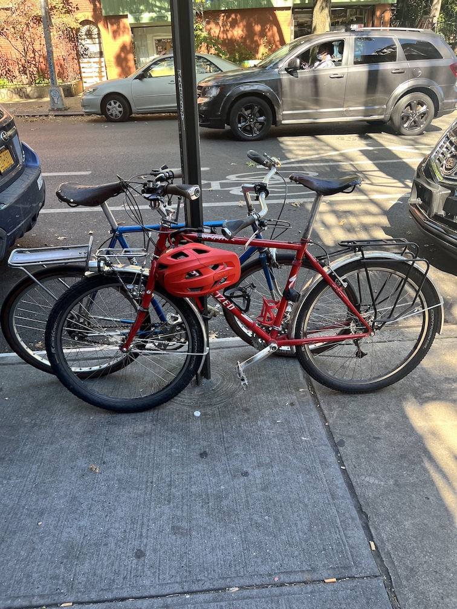
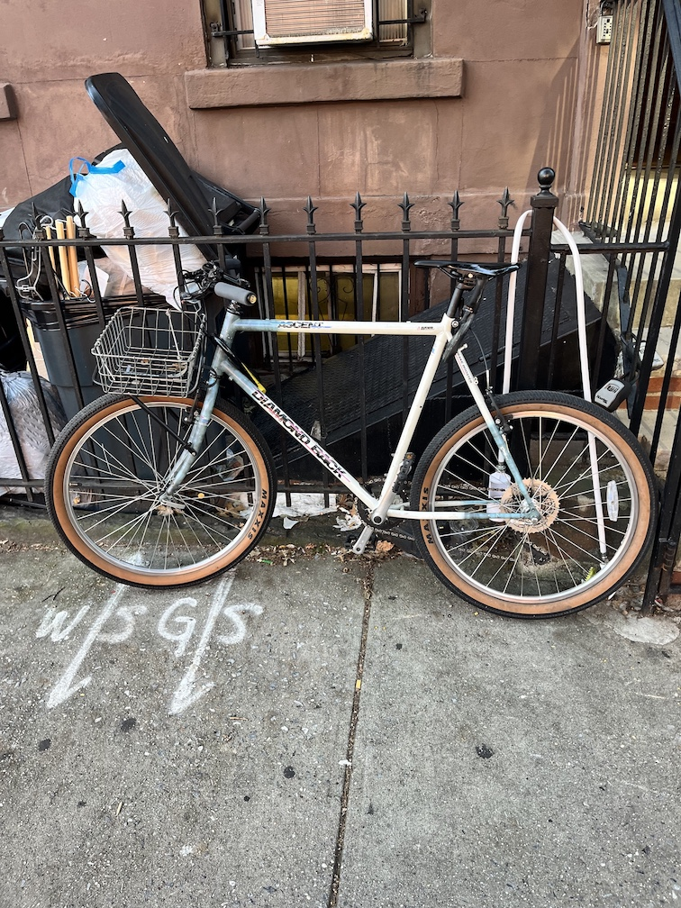

City Bike
Street Photography, 2024-ongoing
City Bike is an ongoing love letter to the bikes of New York City. The City Bike (not to be confused with the Citi Bike) is the workhorse of urban communting, chained to the architecture of the city.
The rustier the better. Chains in desperate need of oil. Stickers, baskets, fenders. Scuffs, urban petina (I hope for the day that my City Bike one day gets tagged). Steel over carbon (though the Raleigh Technium, an alumium-steel hybrid, is a common City Bike). Left outside year-round, yet loved. The city bike is the daily grinder, the reliable commuter.
City Bike aims to document the City Bikes across New York City, observed mostly during my daily walk with my dog in Brooklyn. It began as inspiration for my own City Bike, but has evolved into an archive.
The criteria for a City Bike are loose, but essential characteristics have emerged. Not too nice (though premium parts and accessories may be incorporated); well-loved and rode hard; 80's and 90's models are a nice-to-have (but not essential); Specialized Rockhoppers, GT Triple Triangles; brakeless track bikes. There is a hidden language to the City Bike. If you know then you know.
City Bike draws from the past and projects the future. The city bike is often an older model - acquired through the second-hand marketplace - but imagines an urban future beyond the one-owner motor vehicle.
City streets, right for me
City streets, where I'll be
City streets, right for me
City streets, where I wanna be
- Violent Reaction City Streets, 2013








